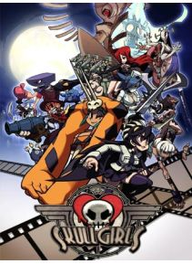

Skullgirls este un joc de lupte 2D dezvoltat de laboratoarele Reverge şi publicat de Jocurile minunate şi de toamnă .În Skullgirls , jucatorii se lupta unul cu celalalt cu echipe de una, doua sau trei personaje, încercând sa-şi smulgă adversarii sau sa aiba cea mai cumulata stare de sănătate, după expirarea timpului. Setarea jocului se învârte în jurul "Inimii Craniului", un artefact care acorda dorinţe femeilor. Daca un wisher cu un suflet impurat foloseşte Inima Craniului, ea este transformată în urmatoarea "Skullgirl", un monstru îndreptat spre distrugere.
Preţ : 43,67 €